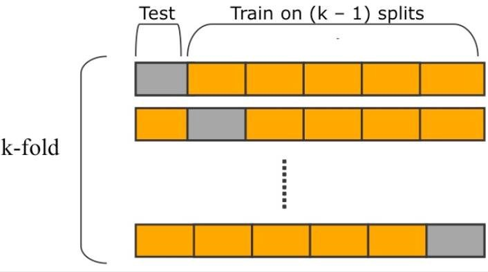
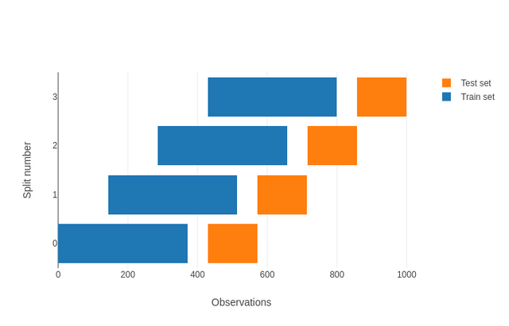

Aula 9
Resampling e validação
Introdução
Aprendemos já no início deste curso que uma das etapas essenciais de qualquer projeto de aprendizado de máquina é a de validação. Salvo exceções (como em tarefas que usam clustering para segmentar uma amostra inteira), o principal uso de um modelo é predizer ou classificar novas ocorrências. Por isso mesmo, testá-lo nos mesmos dados em que ele foi treinado não é o ideal – ao contrário, como já vimos, essa é uma prática que frequentemente resulta em overfitting, isto é, modelos que aprendem ruído em vez de padrões generalizáveis.
Nesta aula, avançaremos no estudo de validação. Em particular, veremos novas estratégias de resampling que serão úteis para lidar com dados que tenham clusters ou estratos, ou ainda alguma dimensão temporal, e que são menos sensíveis a erros aleatórios (i.e., quando obtemos uma métrica de validação artificialmente boa em função de sorte).
Cross-validation
A estratégia mais comum de validação, e que usamos em aulas passadas, é o holdout, no qual separamos uma amostra em duas para fins de treino de um modelo: sorteamos uma parte dela para treinar o modelo propriamente, com 70% das observações disponíveis1; e, a outra, para teste. A vantagem dessa estratégia é que ela é facilmente implementável – não é necessário nenhum framework e o seu custo computacional é ínfimo. Por outro lado, ela é bastante sensível ao resultado do sorteio, o que pode produzir grande variação nas métricas de validação. Há formas alternativas de validação, no entanto, que partem de uma generalização desse procedimento mais simples: cross-validation.
1 Embora esse número possa variar em função de fatores como o tamanho da amostra, número de categorias a serem preditas, entre outros.
O termo pode significar coisas diferentes (ver o paper de Neunhoeffer e Sternberg (2019), por exemplo, para um mapeamento de diferentes usos na Ciência Política), mas, no contexto de aprendizado de máquina, indica uma prática de dividir uma amostra em \(k\) partes e usá-las alternadamente para treinar e para testar um modelo. A forma mais simples de cross-validation, como descrita em James et al. (2013), é a seguinte:
- De uma amostra com \(N\) observações, faz-se holdout de apenas uma observação, isto é, separa-se apenas uma linha do banco de dados para teste e usa-se \(N-1\) observações restantes para treino;
- Repete-se o passo acima removendo cada uma das \(N\) observações;
- Ao final, calcula-se uma métrica de validação para cada um dos \(N\) modelos treinados e tira-se a média delas.
Esse procedimento, chamado de leave-one-out cross-validation (LOOOCV), ilusta a ideia por detrás do cross-validation: em vez de separarmos nossa amostra em treino e teste apenas uma vez, dividimos ela em grupos e, alternadamente, usamos cada parte tanto para treino quanto para teste. Essa estratégia, no geral, tem uma vantagem evidente em relação a um holdout simples: há menor variação, isto é, o efeito da sorte no processo de sorteio aleatório é minimizado.
K-fold cross-validation
Em geral, cross-validation é sinônimo de k-fold cross-validation, outra estratégia de particionamento da amostra. Diferentemente do LOOOCV, no entanto, não separamos uma observação por vez para teste; em vez disso, separamos uma amostra em \(K\) diferentes grupos (ou partes) e, cada um por seu turno, os usamos para teste, deixando todos os demais para treino do modelo. Um exemplo: se temos uma amostra com 100 observações e \(K=5\), então treinaremos \(5\) modelos usando como dados de treino \(k-1\) grupos e, como dados de teste, \(1\) grupo. A imagem abaixo ilustra visualmente a ideia:

A partir dessa definição, é possível notar que o k-fold é a forma mais geral de cross-validation: basta pensar que o holdout que usamos é um caso especial dele, quando \(K = 2\), e que o LOOOCV é outro, quando \(K=N\). Há um continuum, portanto, que depende no tamanho da nossa amostra e do número de grupos, ou partes, que adotaremos para dividir ela. E como escolher um número adequado de \(K\)? Há três coisas a se ter em mente:
Quando maior \(K\), mais dados usaremos para treino do modelo – no caso do LOOOCV, usamos praticamente todos os nossos dados, o que significa que aproveitamos mais informações
Quanto maior \(K\), pela mesma razão acima, menor o viés do modelo (nosso modelo se adapta bem aos dados), mas maior a variância (o trade-off se aplica aqui)
Quanto maior \(K\), maior o número de modelos que treinamos (quando \(K=2\), treinamos apenas \(2\), o que normalmente toma pouco tempo de processamento)
A partir dessas considerações, cada tipo de problema pode ser adaptado para um tipo específico de cross-validation. Em um caso no qual temos uma amostra pequena, de 100 observações ou menos, por exemplo, LOOOCV é uma opção útil porque aproveita mais as poucas informações disponíveis e, dado o número de casos, não implica em muito tempo de processamento. Em problemas de predição ou classificação complexos, nos quais há provavelmente muitas relações não-lineares e interações nos dados, um \(K\) intermediário é interessante em combinação com árvores de decisão ou ensemble porque reduz variância. Finalmente, quando temos uma base muito grande a acreditamos que temos um processo gerador de dados simples, um \(K\) menor pode ser a opção mais eficiente.
Repetição
Mesmo com um número de \(K > 2\), é comum que resultados de cross-validation continuem sofrendo com influência do sorteio de particionamento da amostra (a não ser que \(K\) seja um número muito grande, como no LOOCV). A depender do sorteio utilizado na separação da amostra em \(K\) grupos, por sorte pode-se obter uma métrica de validação melhor ou pior. Para evitar esse problema, é comum repetir o cross-validation \(R\) vezes, cada vez sorteando novos \(K\) grupos. Esse procedimento é chamado de repeated cross-validation e é uma das principais estratégias de validação utilizadas em projetos reais.2
2 Já havíamos utilizado uma variante dessa estratégia, o repeated holdout, que implementamos do zero nas aulas iniciais deste curso.
Grupos e estratos
Muitas vezes, algumas observações são muito correlacionadas – a votação de Lula e de Bolsonaro em um dado município, ou preços de ações em um dado período de tempo. Nesses casos, quando há claramente uma estrutura de clusters ou de nos dados, é importante levar isso em conta na validação, evitando separar observações. A maneira mais comum de se fazer isso é adaptar o cross-validation para sortearmos clusters no lugar de observações para comporem \(K\) grupos. Assim, temos o leave-one-cluster-out cross-validation, ou o cluster k-fold.
Para problemas que têm alguma dimensão temporal, a solução é um pouco mais difícil. Por mais que se separe uma amostra em \(k\) grupos contíguos temporalmente, teríamos data leak caso usássemos no treino dados do fim da série – que é resultado de coisas que aconteceram no seu início. Nesses casos, constuma-se adotar um tipo específico de cross-validation chamado de walk-forward cross-validation ou rolling window cross-validation:3
3 Note que essa estratégia também comporta grupos, isto é, é perfeitamente possível se adotar um cluster or nested walk-forward cross-validation, especialmente quando temos uma base de dados no formato de painel.

Targets desbalanceados
Antes de passar para a implementação de diferentes métodos de resampling, é importante discutirmos o caso de problemas de classificação. Assim como em problemas de regressão, validação por cross-validation é útil mas é preciso termos um cuidado adicional: o de que, ao sortear quais observações pertencerão a cada grupo \(K\), nenhuma categoria no target fique de fora ou que fique em proporção muito diferente do que aparece na amostra completa – caso contrário, modelos treinados podem não aprender a generalizar padrões. Há estratégias específicas para lidar com desbalanço entre categorias (i.e., quando uma ou mais categorias aparecem muito menos que as demais), como undersampling (remover algumas observações da categoria que ocorre mais), oversampling (sortear com bootstrap observações da categoria que ocorre menos) ou SMOTE.4
4 Para além disso, há métricas de validação mais apropriadas para problemas envolvendo dados desbalanceados, como precision-recall curve no caso de problemas com targets binários.
Implementação
Implementar diferentes estratégias de validação e resampling é simples tanto em R quanto em Python.5 A seguir, um exemplo (por conta de algumas particularidade de cada framework, veremos outros em aula):
5 Para uma lista de funções e classes, ver aqui e aqui, para mlr3 e sklearn, respectivamente. Vale notar que, pela API dos dois frameworks, declarar clusters e estratos é algo feito no nível da task no mlr3, enquanto que no sklearn há classes específicas para tanto, como o StratifiedGroupKFold.
K-fold
library(mlr3verse)
library(tidyverse)
link <- "https://raw.githubusercontent.com/FLS-6497/datasets/main/aula9/camara_2014.csv"
dados <- readr::read_csv2(link) %>%
mutate_if(is.character, as.factor)
# Define a task
tsk <- as_task_classif(resultado ~ ., data = dados)
# Cria uma pipeline
gr <- po("scale") %>>%
po("learner", learner = lrn("classif.randomForest", ntree = 100)) %>%
as_learner()
# K-fold
design <- benchmark_grid(
tasks = tsk,
learners = list(gr),
resamplings = rsmp("cv", folds = 5)
)
resultados <- benchmark(design)
resultados$score(msrs(c("classif.fbeta", "classif.precision", "classif.recall")))from sklearn.model_selection import KFold
from sklearn.preprocessing import OneHotEncoder
from sklearn.model_selection import cross_validate
from sklearn.metrics import mean_squared_error
from sklearn.ensemble import RandomForestClassifier
import pandas as pd
link = 'https://raw.githubusercontent.com/FLS-6497/datasets/main/aula9/camara_2014.csv'
dados = pd.read_csv(link, sep=';', decimal=",")
Y = dados['resultado']
X = dados.loc[:, dados.columns != 'resultado']
X = OneHotEncoder().fit_transform(X)
kf = KFold(n_splits=5)
rf = RandomForestClassifier(n_estimators=100)
cross_validate(rf, X, Y, cv=kf, scoring='f1')